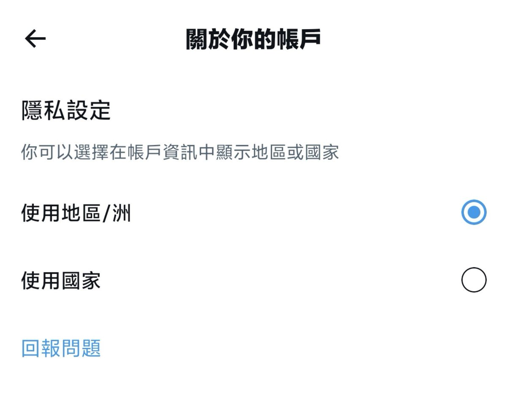
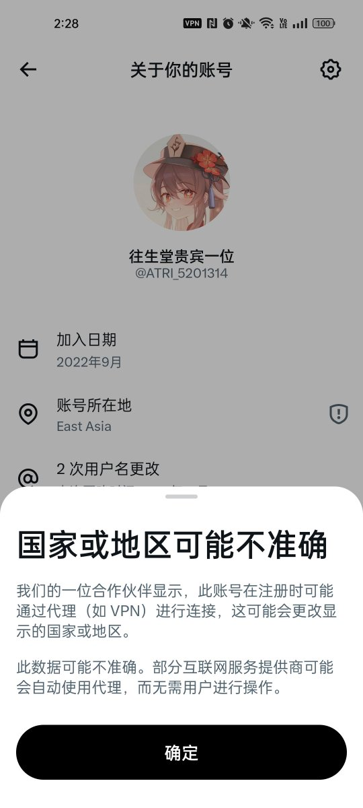
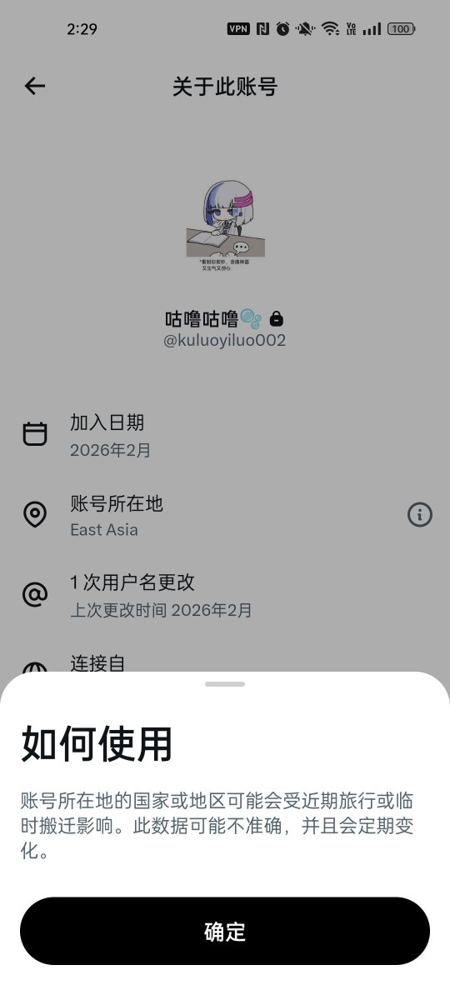

⏚FrankLau⏚
@FrankkkkkkLau
@ATRI_5201314 East Asia是自己设置的叭, 然后这个要很久才会更新一次来着, 不是实时的



往生堂贵宾一位
@ATRI_5201314
我发觉推特这个账号所在地越来越颠了
我、秋儿、伊洛 全都是在香港用CMHK的卡上推特的，所在地显示的依旧是East Asia
SunnyTang肉身澳门，用CTM的卡上推特，所在地没有任何问题
合着专业针对HK对吧 https://t.co/6mrisWggF3